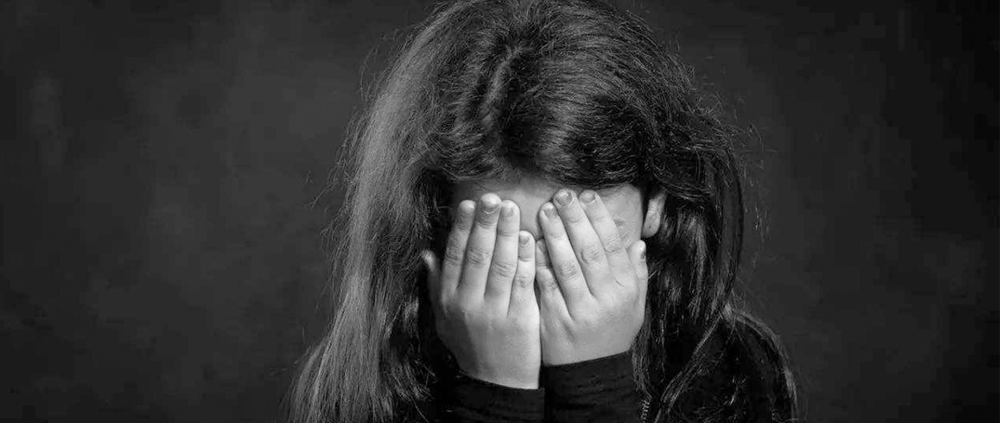

星星夜半时
——中国未成年人被性侵概况
根据世界卫生组织（WHO）的规定，“未成年性侵犯”是指儿童卷入参加不能够完全理解的性活动，或因不具备相关知识而同意的性活动，或因发育程度限制而无法知情同意的性活动，或破坏法律或社会禁忌的性活动。目前，中国还有许多这样的未成年性侵事件，在各个隐秘的角落滋长。
——
星
屑
散
落
——
2020年4月8日,某媒体发布了一条时长6分钟短片，一名化名为“李星星”的女孩自述“被烟台上市公司高管性侵四年”。从2016年起，她和“养父”鲍某某一起生活，3年时间内遭到多次性侵，其自述“第一次被性侵时刚满14周岁”。互联网上，关于未成年人被性侵的讨论日渐热烈。破涛汹涌之下，还有更多受害者，等待着救赎。
李星星的歌
我们将李星星本人撰写（或为以李星星为原型）的小说《生命的遗书》中第二、三章进行了文本情感分析，并通过其情感得分生成一段旋律，这段音频是属于“李星星的歌”，也是李星星想向大众传递的声音。
2013年，据公益项目“女童保护”统计，被报道的未成年人被性侵案件为125件。6年过去后，这个数字增长到了301。自2013年至2019年，媒体共曝光2397起性侵儿童的案例中，每起案例中都有不同数量的受害儿童，其中最高达到了100多人。更令人触目惊心的是，被报道的不过是“冰山一角”：2015年至2018年11月，全国法院审结的猥亵儿童案件多达11519件。而仅仅在2020年第一季度，最高人民检察院决定起诉性侵未成年人犯罪人数就达到了4151人，与2019年第一季度相比，上升了2.2%。
庆幸的是恶魔并非无处藏身，三十年来，未成年人遭性侵案件审理数量总体增多，法律法规不断完善。保护未成年人的权益，国家正在不断努力着。
数据来源：《关于儿童性侵的司法案例数据分析报告》
——
星
群
暗
淡
——
案发地区？
(将鼠标轻轻放于地图上，查看该地区性侵未成年人的案件数量)
根据《关于儿童性侵的司法案例数据分析报告》，在西藏、青海和宁夏地区，被报道出的性侵未成年人案件都未超过74件。而在四川、湖南、安徽、江苏、浙江地区，被报道出的未成年人性侵案件数量居高。根据中国少年儿童文化艺术基金会女童保护基金的报告，由于案例的特殊性，以及受社会认知、风俗习惯、传播规律、搜索规则等因素影响，媒体报道案例数量的浮动属于正常现象。
受害者年龄？
根据中国少年儿童文化艺术基金会女童保护基金的数据，2015年到2019年，被报道的未成年被性侵的年龄集中在7-14岁。其中7到12岁的比例从2015年的34%上升到了2019年的41.53%。巨大的数字让我们不禁思考，中国为何有如此多的未成年人遭遇恶魔之手？
受害者性别？
与常识不同的是，在报道出的被性侵的未成年人中，男性的比例也不少。根据“女童保护”统计，2019年媒体公开报道的301起性侵儿童案例中， 男童为21起，受害人数量达到81人，在受害人数中占比10.69%。
2020年5月初，多名受害者在微信公众号和微博爆料，全国“优秀班主任”、四川省宜宾市高中老师梁某（男），在2010—2020年10年期间，利用班主任和心理健康中心主任的身份，以对学生进行心理疏导为伪装，对班上的男生实施各种程度的猥亵和骚扰，统计到的受害者已经超过20人。
2015年，刑法修正案（九）将原来的强制猥亵妇女罪修改为强制猥亵他人罪， 扩大了保护主体范围，打破了被害人性别的限制，不仅包括妇女，还包括十四周岁以上的男性。据律师介绍，该案件是我国首例男性教师大面积猥亵14周岁以上男性学生而进入刑事司法程序的案件。
作案场所？
(将鼠标轻轻放于地图上，查看该犯罪场所所占比例)
从“女童保护”的数据中可以看出，学校、培训中心等未成年人密集活动的场所是性侵案的高发地。本应是未成年人安心学习之处，却成为了恶魔滋生地，因此这些地方更加需要相关部门加强监管。
侵害者是谁？
(将鼠标轻轻放于图标上，查看该作案者所占比例。）
值得我们关注的是，离孩子们最近的家人和老师，正在加剧未成年人的性侵之殇。根据“女童保护”统计，在2019年媒体公开报道的301起案例中，熟人作案212起，占比70.43%。从近几年来发布的报告看，熟人作案比例一直居高，最高达87.87%（2014年）。而这212起熟人作案的案例中，家庭成员（父亲、继父等）作案22起，占比10.38%。
2020年7月，中国裁判文书网发布了彪某甲犯强奸罪一案刑事判决书，被告人彪某甲系受害人彪某某父亲，多次强奸自己的亲生女儿，判处有期徒刑七年零六个月。
来自湖北的黄某自2003年以来，多次以殴打等方式对当时还未满14周岁的大女儿小雅(化名)实施强奸，导致小雅先后两次怀孕并堕胎。
2017年5月，张姓男子与其妻离婚后，与女儿小花（2007年6月出生）共同生活。2017年7月至8月间，张某在家中多次强行与小花发生性关系，致小花会阴、阴道裂伤，阴部大出血，小花后被送至当地医院治疗。
然而，家庭成员作案具有隐蔽性，后续治理和相关工作难度大。多起发生在家庭中的性侵案例表明，考虑到亲情、伦理、生活保障等因素，受害人往往不敢声张，不敢报警维权。未成年人在处于这样权力结构十分悬殊的弱势地位下，如何使他们敢于说出事实的真相，找到合法靠维权渠道，是我们应该思考的问题。
——
星
星
的
后
半
夜
——
这些“星星”的背后，到底是谁在实施暴行？绝大多数的“星星”没有像李星星一样，得到广泛的关注，他们甚至没有被发现、不知道自己身上发生的是什么事情。而受到观念等影响，很多受到性侵的儿童或其家长忍气吞声，没有报案；另外就是报案后，因为缺乏证据，公安机关没有立案，由于强奸和猥亵案件难以进入司法程序，许多恶魔便肆无忌惮地对未成年人伸出了魔爪。
侵害者年龄？
从数据中看出，绝大部分被告人年龄在18~60岁这个范围内。但我们也应注意到，在120位公布了年龄信息的被告人中，有15人不满18岁，还有25人超过了60岁。年龄最大的一位被告人已经94岁。
侵害者作案动机？
震惊与愤怒之余，我们也想进一步看清楚，这些施害者到底为什么实施暴行？据2019年度《上海市妇女儿童权益司法保护工作白皮书》披露，2019年在上海法院系统审判的性侵犯罪中，主要包含猥亵儿童罪、强奸罪和强制猥亵罪;其中猥亵儿童罪占比达58.8%，强奸罪和强制猥亵罪分别占31.1%和8.1%，下图分别是强奸案和猥亵案的被告人犯罪动机。
从数据图中可以看出，在猥亵和侮辱等案件中，表示自己仅仅是“酒后起性”的动机的犯罪者最多，其次是“报复对方”。关注侵害者的动机，也能够帮助我们了解如何教育大众、规避风险。
被害者受害方式和被告人受惩手段？
在中国裁判文书网上以“性侵”+“未成年”+“2019年全年范围”为关键词进行搜索，我们筛选出了2019年的69篇相关文书。经过梳理和去重，3例非强奸案，2例非未成年人，1例无罪，2例同时包含一审二审文书，后总计61例，其中涉及到85个作案人和68个受害者。
左图中，女孩身体里的每一颗星星都是1起案件中的受害者，而右图中，每一颗星星则对应着每起案件中的被告人。
(请将鼠标轻轻移动到不同星星上，查看受害者受害方式和被告人受惩手段）
从已公布的案件文书来看，像鲍毓明这样有着高管、律师等精英人设的施暴者其实是少数。但我们不能就此认定这类人群施暴概率更小，从近几年媒体曝光的新闻来看，当施暴方有着较高的社会地位，性侵事实也更容易被掩盖，更难进入案件审判的流程。
网络性侵——另一个“隐秘的角落”
根据“女童保护”的数据，2019年曝光的性侵未成年人案例中，网友作案21起，包括线上作案和线下作案（网友约见面后实施性侵），占比9.91%。在一起网络性侵案件中，侵害者通过手机聊天软件，采取哄骗、威胁的手段骗取多名不满14周岁幼女向其发送裸照，并以将裸照发送给幼女亲友同学为由，胁迫见面，实施奸淫、猥亵行为。除了该案例之外，“女童保护”发现，还有一些施害人打着招募童星、主持人、演员，帮助变漂亮，提供高薪工作，网络恋爱等幌子，诱骗未成年人见面实施性侵害或者要求受害人向自己发淫秽、裸体照片、视频或文字。
而根据“女童保护”调查，仅四成家长对孩子上网进行严格监管，22.85%的青少年浏览过色情文字、图片或视频，其中偶尔有的占17.79%，经常有的占5.06%。同时，有8.70%的青少年有过未经父母、老师同意去见网友的经历。未成年人如何预防网络性侵，是一个亟待解决的难题。
——
星
星
点
亮
计
划
——
2015年2月，易衡（@女王易衡）在互联网上发布了一个关于儿童性虐待的调查问卷，在这17522份有效问卷数据的结果显示，超过7成（70.11%）的受害者没有向他人披露自己经历性虐待的事实，而进一步再次统计了受害者没有告诉其他人的原因。
受害者未倾诉原因
(请将鼠标轻轻移动到不同图标上，查看受害者未向他人倾诉的原因）
-
-
-
-
-
当时不知道自己经历了什么，
因而未在合适时机告诉他人
60.79%
从图中可以看出，当今中国的性教育处在空白地带，未成年人对于性知之甚少。这也是未成年人性侵案高发的原因：很少有人能够像“李星星”一样，了解清楚发生在自己身上的遭遇并寻求帮助。
“女童保护”发布的《“最美的春夏”2019年青春期性健康教育调查报告》显示，61.48%的青少年有过“青春期的困惑”，78.24%的青少年缺乏青春期性健康教育。由于缺乏青春期性健康教育，有一些青少年容易受到网络骗子的诱导。8.73%的青少年遇到过性侵害；62.70%的人不清楚如何预防。
对此，全国政协委员凌锋建议：应该将儿童防性侵教育纳入九年义务教育课程体系，同时完善网络儿童色情制品和网络治理，提高法定“性同意年龄”。营造良好的社会环境，对他们形成强有力的保护作用。全国政协委员陈忠红在今年全国两会上提交了《关于依法保护未成年人合法权益 严厉打击性侵未成年人犯罪的提案》，将对于未成年人的保护纳入更加切实的法律保护，才能让更多的“星星”不至于暗淡无光。
各方求助渠道
根据@女王易衡的问卷调查结果，回顾首次经历性虐待的细节，有17.29%的人表示自己清楚自己正在被侵犯；46.9%的人表示自己隐约感觉到自己在经历的事情是不好的；但很遗憾，仍有34.16%的表示自己当时没有意识到，很久之后才了解自己经历了性虐待。在缺乏性教育和求助渠道的情况下，很多儿童不能清楚知道性虐待是什么，更不懂如何去保护自己。
值得欣慰的是，我国正努力健全各方未成年人保护救助渠道，当未成年人受到侵害时，可以通过线下机构、线上微信公众号、微博等平台进行求助。希望未来，遭受侵害的“星星”能够越来越少。
(请点击图片并向左右拖拽，查看我国各地区未成年人保护救助渠道）
星星的树洞
在@女王易衡的问卷调查结果中，那些被受害人信任的知情者在如何处理性虐待时，有50.48%的人开导和安慰受害者；有11.95%带受害者远离了施害人；有10.31%的人认为受害者小题大做；有8.57%的人选择开始对受害人进行性教育；但同时，有25.32%的知情人什么也没做。
沉默源自于大环境的偏见，知情者的不作为往往会给孩子造成难以估量的精神伤害，所以在对儿童进行的性教育的同时，当我们遇到此类事件时，要对受害者进行心理上的开导和安慰，并鼓励受害者进行自我救助，让沉默的大多数不再成为常态。
这里是一个隐秘的树洞，你可以在这里以一颗“星星”的身份写下自己的秘密，也可以写下想对星星们说的话。
————————————————————————————————
数据来源：《关于儿童性侵的司法案例数据分析报告》、《2019年性侵儿童案例统计及儿童防性侵教育调查报告》、《上海市妇女儿童权益司法保护工作白皮书》、《“最美的春夏”2019年青春期性健康教育调查报告》、中国少年儿童文化艺术基金会女童保护基金、裁判文书网、@女王易衡、CNKI
团队成员：蒋菡婷、周祺蕙、杨唯潇、李庆、李欢
指导老师：刘娜
CONTACT US
tel：18299172798
E-mail：596934132@qq.com